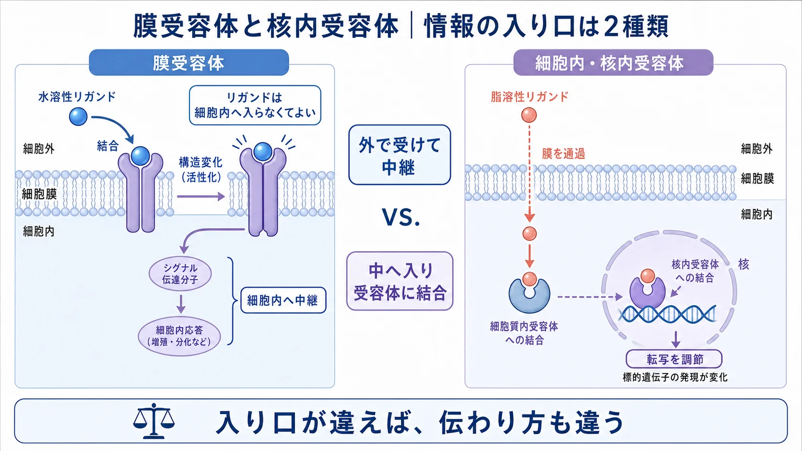
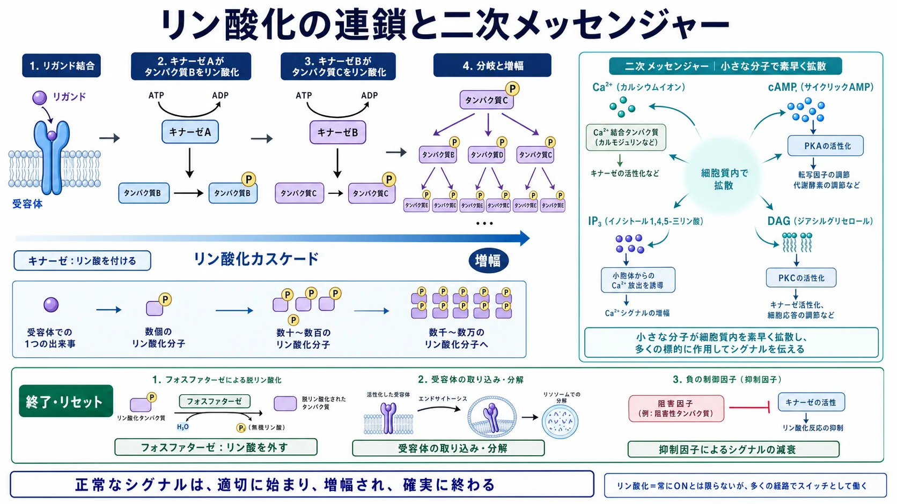
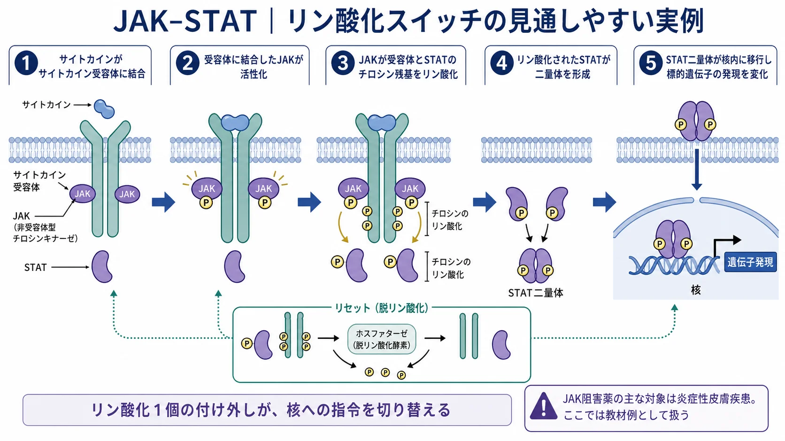
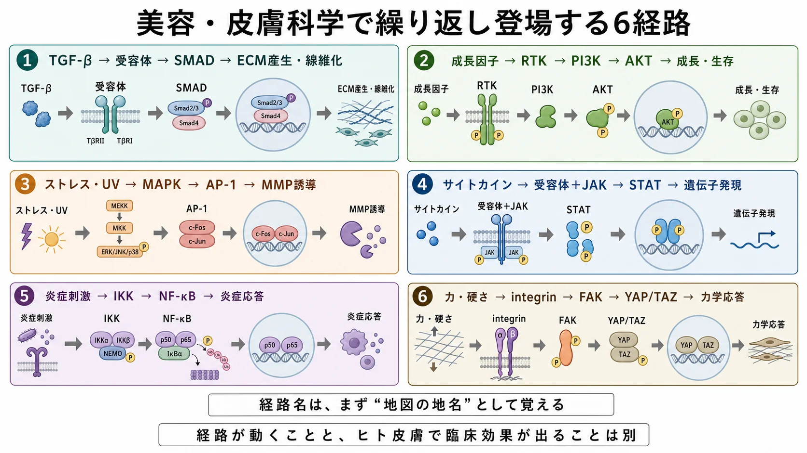
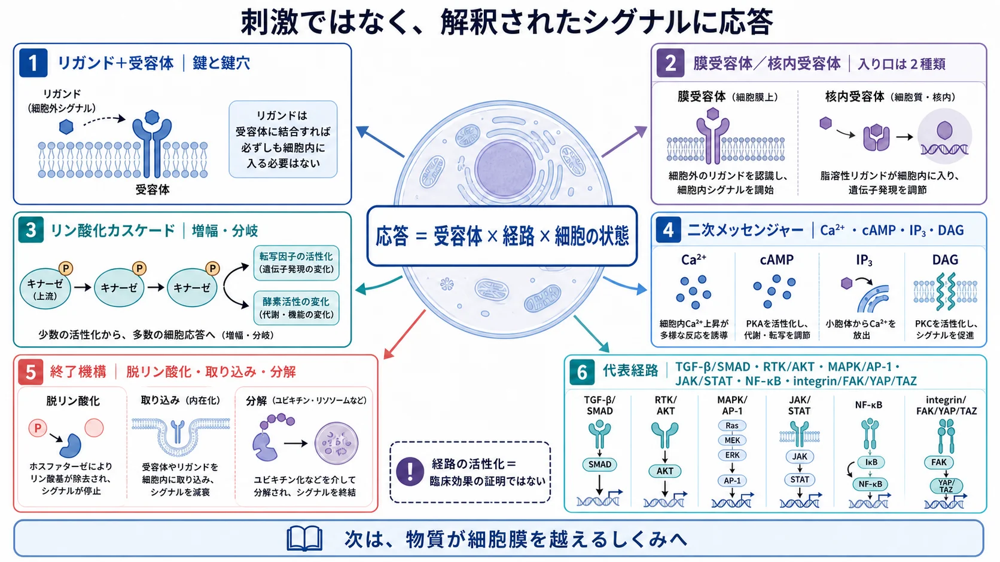

基礎 ／ 情報をどう読むか
受容体と細胞内シグナル
公開 2026-08-16
同じ機器を同じ設定で当てても、反応の出方は患者によって違います。出力を上げても埋まらない差があります。差が生まれる場所は二つあります。刺激を受け取って核まで伝える過程と、核が指示を出したあとに実際に作る過程。作る過程はDNAからタンパク質までが扱います。この章が扱うのは、伝える過程です。
この章の一言
刺激は細胞に影響します。ただしその影響の大きさを決めているのは、刺激の強さではなく、受け取る細胞の側の条件です。刺激は受容体で細胞内シグナルに変換され、核へ届いて、どの遺伝子をどれだけ読むかに反映されます。その途中の条件が、細胞ごとに違います。
1 応答を決めているのは、刺激の強さだけではない
外からの情報の多くは、分子の形で届きます。成長因子、cytokine、ホルモンなど。受容体に結合して情報を渡すこれらの分子を ligand（リガンド） と呼びます。応答を決めているのは、その ligand の量ではなく受け手側の三つの条件です。
| 受け手側の条件 | 何が変わるか | この章のどこで見るか |
|---|---|---|
| 受容体の発現量 | そもそも入口がいくつあるか。受容体が少ない細胞では、ligand を増やしても入る量は頭打ちになる | §2 |
| 経路の増幅と終了のバランス | 同じ入力が何倍になるか、いつ止まるか。終了側が強ければ短く終わり、弱ければ持続する | §3 |
| 足場（ECM）の硬さと張力 | 力そのものがシグナルとして入る。同じ ligand でも、硬い足場と柔らかい足場では応答が違う | §5 |
この三つが掛け算になるので、入力が同じでも出力はそろいません。
2 入口は2種類：膜受容体と核内受容体
ligand を受け取るのが受容体（receptor）です。対応する ligand が結合すると受容体の形が変わり、細胞内へ伝わります。入口は2種類あります。
- 膜受容体：細胞膜に刺さっている。水に溶ける ligand（多くの成長因子・cytokine）は膜の外で結合し、細胞内へシグナルを中継する。TGF-β受容体、RTK（receptor tyrosine kinase＝受容体型チロシンキナーゼ）、cytokine受容体などがこれ。RTKは受容体そのものがキナーゼで、ligand が結合すると自分でリン酸化を始めます。成長因子やインスリン／IGF-1 の受容体がこれにあたります。ligand は細胞の中まで入りません
- 核内受容体：脂溶性の ligand（ステロイドホルモン、甲状腺ホルモン、活性型 vitamin D、vitamin A の活性体であるレチノイン酸など）は膜を通り抜けて細胞の中まで入ります。受容体そのものが transcription factor なので、リン酸化のリレーを挟まず、結合したものがそのまま DNA に働きます。ただし出力は新しく作られたタンパク質なので、転写と翻訳を経るぶん効果が出るのは遅く、できたタンパク質が分解されるまで続きます。ステロイド外用やレチノイド外用が効くのは、この仕組みです（受容体は、レチノイン酸受容体や甲状腺ホルモン受容体のようにはじめから核内にあるものと、glucocorticoid 受容体のように細胞質にあって結合後に核へ入るものがあります）

同じ濃度の ligand が組織にあっても、その細胞にその受容体が出ていなければ入口はありません。 これが一つ目の条件です。
3 共通のスイッチはリン酸化 ―― 増幅し、そして必ず終了する
膜受容体からのシグナルは、多くがリン酸化の連鎖（phosphorylation cascade）で伝わります。
- キナーゼ（kinase）＝リン酸を"つける"酵素。多くはそのタンパク質を ON にする
- フォスファターゼ（phosphatase）＝リン酸を"外す"酵素。OFF（＝終了・リセット）にする
この付ける／外すのバランスが、シグナルの増幅・持続・終了を決めます。mTOR・AKT・MAPK・AMPK といった主要な分子も、すべてこの付け外しで働きます。チロシンキナーゼはタンパク質のチロシン残基にリン酸を付けるキナーゼで、美容で中心になるのは §2 の RTK です。RTK からは PI3K – AKT – mTOR という成長・合成側の経路が伸びます（→ mTORC1はアミノ酸をどう感知するか）。
増幅は、1個の受容体が多数の分子を活性化し、下流でさらに増えることで起きます。弱い刺激を大きな応答に変換できる代わりに、終了の仕組みがないと刺激が去っても反応が続きます。
終了の担い手は、脱リン酸化（phosphatase）、受容体の取り込み・分解、抑制性の因子です。正常なシグナルは、適切に始まり、適切に終わります。 炎症も同じです。炎症のスイッチである NF-κB が入ること自体は異常ではありません。異常なのは、終了の仕組みが働かず、炎症が終わらないときです（→ 炎症と創傷治癒）。
リン酸化のリレーの途中で情報を広げるのが second messenger です。代表は Ca²⁺、cAMP、IP₃、DAG です。IP₃ は ER から Ca²⁺ を放出させる合図、DAG は膜にとどまって別のキナーゼ（PKC）を呼びます。オルガネラはどう連携するかで触れた Ca²⁺ の受け渡し（ER⇄ミトコンドリア）も、この情報伝達の一部です。

受容体から核までの中継がいちばん少ない実例が JAK–STAT です。cytokine が受容体に結合すると、受容体に会合している JAK（非受容体型チロシンキナーゼ）が活性化し、STAT のチロシンをリン酸化 → STAT が二量体になって核へ入り、遺伝子発現を変える。受容体で始まったリン酸化が、そのまま核での転写につながる流れが見えます。
この経路は薬の標的でもあります。アトピー性皮膚炎の炎症の中心になる IL-4・IL-13、かゆみに関わる IL-31——受容体はそれぞれ別ですが、中継する JAK は共通です。JAK を止めると STAT がリン酸化されず、STAT は核へ入れません。核へ入る分子がいなければ、炎症やかゆみに関わる遺伝子は転写されません。JAK阻害薬（アトピー性皮膚炎・円形脱毛症）がよく効くのは、この1か所で複数の cytokine をまとめて止められるからです。ただし、免疫細胞を動かす cytokine の信号も止まるため、帯状疱疹などの感染症にかかりやすくなります。
リン酸化は phosphatase に絶えず外されているので、JAK を止めれば、すでにできた pSTAT は補充されずに消えていきます。そのため効果は早く出て、やめれば早く戻ります。

4 繰り返し登場する代表経路（名前だけ）
ここで押さえるのは名前と、それぞれが何の系統かだけです。中身は、その経路が主役になる章（炎症と創傷治癒・ECMとmechanotransduction・線維芽細胞とコラーゲンなど）で扱います。
経路の名前は、役割で付いていません。 いちばん特徴的な分子から名前を取っているので、リガンドの名前だったり（TGF-β）、キナーゼの名前だったり（JAK、MAPK）、転写因子の名前だったり（NF-κB）します。名前だけでは、どれが受容体でどれが中継か分かりません。役割で並べ直すと、こうなります。
| 経路 | 入力（ligand） | 受容体 | 中継（キナーゼ） | 核で働く分子 | 役割 |
|---|---|---|---|---|---|
| TGF-β – SMAD | TGF-β | TGF-β受容体 | 受容体自身（TβRI） | SMAD | ECM産生・線維化（→ ECMとmechanotransduction・線維芽細胞とコラーゲン） |
| RTK – PI3K – AKT | 成長因子・インスリン／IGF-1 | RTK | PI3K・AKT | FOXO を抑える | 成長・生存（→ mTORC1はアミノ酸をどう感知するか） |
| MAPK – AP-1 | UV・ストレス・成長因子 | 入力によって違う | MEKK → MKK → ERK/JNK/p38 | AP-1 | stress応答。MMP誘導に関与 |
| JAK – STAT | cytokine | cytokine受容体 | JAK | STAT | cytokine signaling の主要ルート |
| NF-κB | TNF-α・IL-1 など炎症刺激 | TNF受容体・TLR など | IKK | NF-κB | 炎症の中心的スイッチ（→ 炎症と創傷治癒） |
| integrin – FAK – YAP/TAZ | ECMの硬さ・張力（分子ではない） | integrin | FAK | YAP/TAZ | mechanotransduction（→ オルガネラ§5・ECMとmechanotransduction） |

5 三つ目の条件：足場が応答を変える
ほかの経路は分子が受容体に結合しますが、integrin – FAK – YAP/TAZ は張力が入力になります。細胞が接着している ECM の硬さと、そこにかかっている引っ張りの強さです。 細胞は、自分が乗っている足場の硬さを測っています。
「入力→受容体→中継→核」という並びは、この経路も同じです。integrin が受容体——ただし ligand の代わりに ECM をつかむ。FAK が中継のキナーゼ、YAP/TAZ が核へ入る転写因子です。
fibroblast は integrin で ECM をつかみ、その接着点で細胞骨格を引きます。足場が硬い・引っ張られていると FAK を介して YAP/TAZ が核に入り、増殖と ECM 産生に関わる遺伝子が読まれます。柔らかい・たるんだ足場では YAP/TAZ は核に入りにくく、同じ成長因子を与えても応答が小さくなります。
つまり受容体からのシグナルとは別に、足場の状態そのものが、常に入力として加わっています。 同じ機器・同じ設定でも反応が違う理由の一つがここにあります。真皮の ECM の状態——collagen・elastin の量、架橋の進み方、そこにかかる張力——が違えば、同じ刺激への応答も違う、という形でECMとmechanotransduction・線維芽細胞とコラーゲンにつながります。
この章の到達点
- 情報は ligand として届き、receptor が受け取る。入口は膜受容体（外で受けて中継）と核内受容体（中へ入って直接働く）の2種類で、膜受容体では ligand は細胞内に入らない。
- 共通のスイッチはリン酸化。キナーゼ（つける＝多くはON）／フォスファターゼ（外す＝OFF・終了）。シグナルは second messenger で広がり、増幅されるが、確実に終了させる仕組みまで含めて正常に働く。
- 代表経路は6本あり、骨格はどれも「入力→受容体→中継→核→出力」で共通していて、違うのは入力と出力。この章で詳しく見たのは JAK–STAT と integrin–FAK–YAP/TAZ。
- 応答を決めるのは刺激の強さではなく、受容体の発現量・増幅と終了のバランス・足場（ECM）の硬さと張力の掛け算。だから出力を上げれば結果も大きくなる、とはかぎらない。
この章のまとめ

細胞膜と物質輸送では、物質が細胞膜を越えて出入りするしくみを見ます。この章の ligand は膜の外で受容体に情報を渡して終わりでした。膜そのものを越える分子と越えない分子を分けているものは何か、という話です。